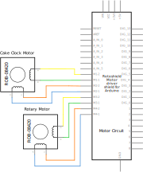

System block diagram showing how the components go together.
Picture of the stuff going together

The clock's components, partially assembled.
Challenges:
Integration was kind of challenging because the mechanical and fabrication team had to make physical systems that would allow the electrical system to connect the bottom two clocks; the electrical team didn't always know until too late how to design for wiring. However, through iteration we managed to come up with a physical base that was close to optimal!
We also had problems with the final assembly because we didn't test very much while we were assembling. We did enough unit testing, but often once we had assembled everything we found that it wasn't working for mysterious reasons! Usually the reasons were something like "a wire came undone" or "something is shorted but we don't know where."
The mechanical subsystem serves as a physical base for wiring, arduinos, and motors. The actuation of the 'surprise' inside the top clock was also designed as part of the mechanical subsystem.
Pictures of the mechanical parts
Fabrication methods:
We designed the parts to be planar so that they could be laser cut, which meant that we used many flat faces in our design rather than curves. Since we were already using the laser cutter, we embellished the clock using laser engraving. In our initial iterations we cut teeth into the edges of each face so that they could interlock, which made more contact points, but we opted against that because we preferred the look of the pieces without the teeth.
We used the Trotec laser cutter instead of the Helix for the final pieces because it was more accurate and left less pronounced burn marks. With a laser cutter like the Helix, we would have had to spend more time sanding to clean the pieces up.
We cut the wood for the table, dowels, and support blocks by hand. In order to connect the faces, we beveled the edges by sanding them. We measured the angle we wanted and made triangular pieces of wood that was cut at that angle and used it as a jig to sand the pieces down. We found that it was challenging to sand at an even angle across long pieces, so it was important to run the piece across the sander. It's important to check the bevel periodically to make sure the angle is correct and none of the length of the piece has been sanded off.
We primarily attached the faces to each other with glue. We also used screws, hinges, and brackets when appropriate.
Challenges:
Because we have rotating parts, we had issues getting them not to wobble. Centering the pieces exactly reduced this problem and creating more stable surfaces were both ways we addressed this problem. To create a more stable surface for rotation for the outer drum of cake clock, we made a table for the motor mount that has more surface area that contacts the outer drum but has low friction because we used slippery surfaces (electrical tape and smooth hardboard).
Our electrical subsystem serves to gather data from the environment and user, power the motors and LEDs to provide feedback, and signal between Arduinos to communicate between clock tiers.

Here's a circuit diagram showing our very complicated sensor arrangement! Three distance sensors are connected to pins A0-A2; the LEDs are connected to PWM pins 5 and 6; and the reflectance sensors are connected to PWM pins 9-12.

Here's a circuit diagram showing how our motors are connected to the motor shield. There are two sets of five slots for motors, and each stepper motor takes up all five of them.
We did a lot of WEIRD stuff with connectors. Sometimes we had to solder two wires together with a resistor and then add heat-shrink wrapping over them to make sure they didn't fall apart. Sometimes we had to crimp wires and stick them in connectors and then heat-shrink the connectors. It was a mess. In the end we mostly soldered our wires to protoboards to keep them from getting messy. Thank goodness for protoboards!
Electrical Components:
LEDS: We used addressable LEDs for the lights to indicate whether the IR distance sensor is triggered and to light up the images of the animals. This was because if each LED required a separate pin on the Arduino, we would not have enough pins. We decided against having something in hardware to encode the signals to each pin and instead used addressable LEDs which had that function built in.
MOTORS: We started out using DC motors with lower torque but switched to higher-torque stepper motors because of the friction and weight of the rotating pieces.
DISTANCE SENSORS: First, we wanted to encourage people to imitate the motion of a clock, so we wanted to tell if they were were moving around the clock. We used 3 IR distance sensors and recorded the order they were triggered to find out if people were actually ambulating around the clock.
REFLECTANCE SENSORS: When choosing sensors for the encoder, we basically just needed some that would work at really close range and could discriminate between something black and something white at a few millimeters. And we had a bunch just lying around in the stockroom, so we used those!
SURPRISE TRIGGER: We really wanted a physical interaction our users could carry out, so we decided on a pressure sensor. We decided to use velostat, an electrically conductive material whose resistance changes with pressure--ie, it changes when stepped on.
Two resistor breadboard
Other electrical stuff too
Wire organization strategy, explaining what gets crimped/connectors
Challenges:
One of our biggest challenges early on was trying to find enough pins for all the electrical components we wanted to use. We needed analogue pins for three distance sensors and four reflectance sensors (we had 6 total) and digital pins for 18 LEDs (we had 14 total)! Clearly we wouldn't be able to do it all on one Arduino--OR WOULD WE? We solved our problems neatly by using addressable LEDs, which only take one pin per string, and putting our reflectance sensors in digital pins after making sure their threshold read as HIGH when they saw something black. This meant we only needed 3 analogue pins and 6 digital pins, leaving us pins to spare!
We were also advised that if users were going to be spinning a stationary motor we would have problems with back EMF that might permanently damage the motor. So we added a flyback diode to prevent back EMF. Turns out it completely prevented our motor from working at all... so we just ditched it. The motor hasn't broken yet, so maybe it wasn't too important!
Link to our Github
Our software system allows us to interpret the sensor data and use it to determine how to control the motors and addressable LEDs using the Adafruit Neopixel library (LINK) and the Adafruit Motorshield library (LINK).
Arduino 1 code (bottom clocks):

Arduino 2 code (top clock):
Challenges:
We didn’t have enough money for a good quadrature encoder, and other solutions like potentiometers (are Gross and) don’t allow for full rotation. A stepper motor wasn’t a viable solution because while the stepper only knows its angular position correctly when not moved by an outside force.

Our solution: we made our own cheap rotary encoder out of four IR reflectance sensors and a printed encoder sheet that we made in MS paint. Each 30° section of the encoder differs by one bit from both of the ones next to it (except the 11 and 12 positions), and the reflectance sensors each read a different bit from outside (0001) to inside (1000).
We also had some problems getting the code to figure out which order the IR distance sensors were triggered in. Our solution is a rather inelegant array-based series of if statements. When a sensor is triggered, we make that array component the sum of the other two sensor values plus one. This means that the lowest value in the array represents the sensor that was triggered first, and that when the sum of them is equal to 7 they have all been triggered. Then we use if statements as a switch case to figure out which way the motor should be rotating. Inelegant and inefficient, but effective!
{kind=link}
{kind=link}
{kind=link}